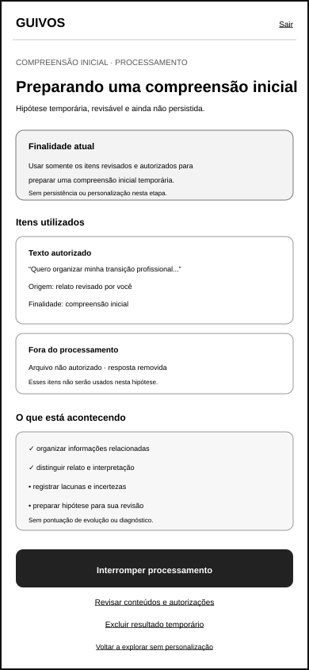
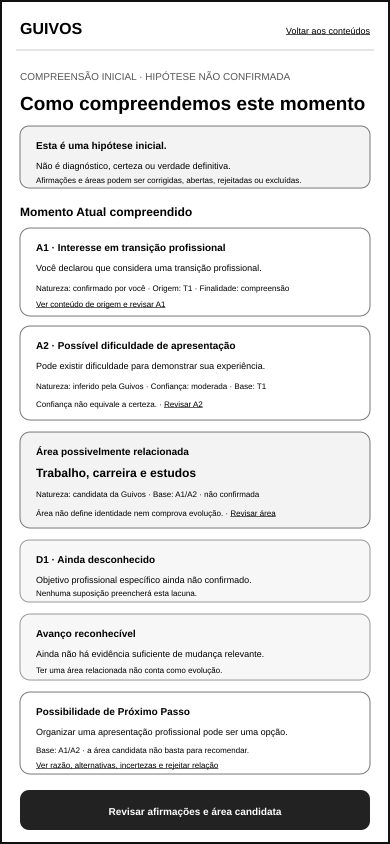
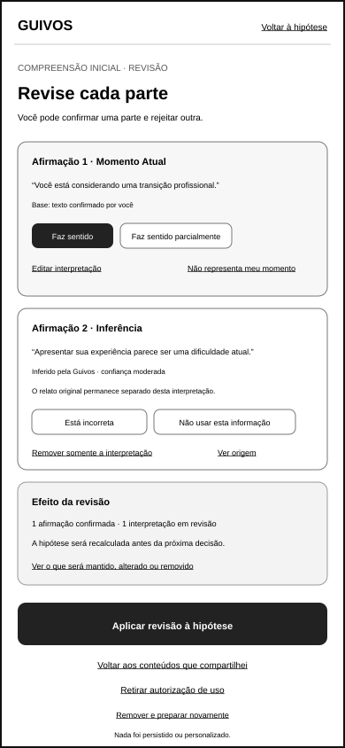
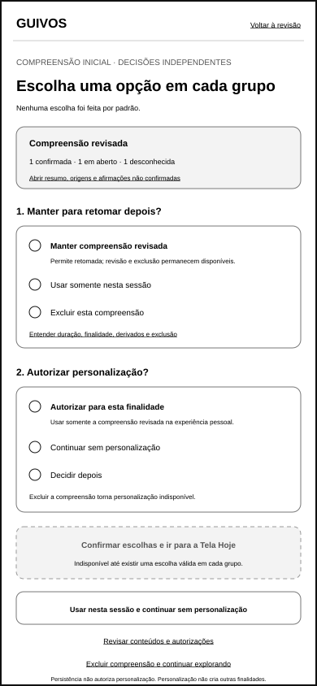
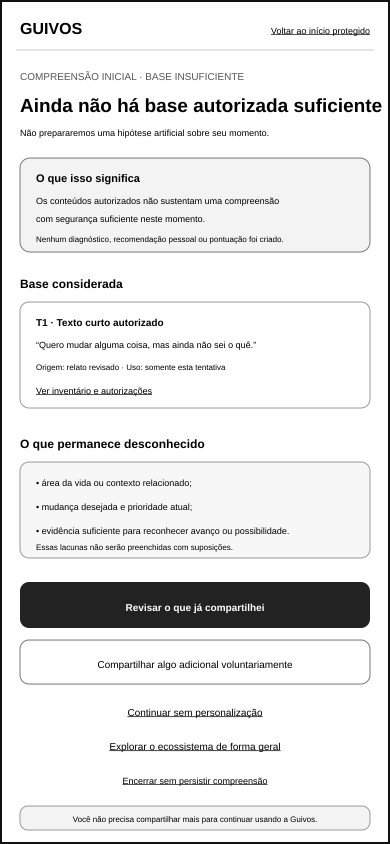

Wireframe de Baixa Fidelidade da Compreensão Inicial¶
1. Finalidade¶
Este documento materializa a referência gráfica móvel da compreensão inicial da jornada pessoal da Guivos, reformulada e validada funcionalmente pela UXA-037.
O conjunto demonstra como conteúdos previamente revisados e especificamente autorizados poderão ser utilizados para preparar uma compreensão temporária, verificável e corrigível antes de qualquer decisão sobre persistência ou personalização.
A referência preserva a distinção entre:
- conteúdo recebido;
- processamento autorizado;
- interpretação produzida;
- informação confirmada;
- inferência;
- desconhecido;
- contestação;
- persistência;
- personalização;
- continuidade sem personalização.
O artefato não representa diagnóstico, avaliação profissional, verdade definitiva, design visual, modelo de IA, algoritmo, texto jurídico final, protótipo navegável ou implementação.
2. Posição na experiência¶
Página Inicial pública
→ explicação do ambiente protegido
→ acesso, somente quando necessário
→ escolha e rascunho mínimo
→ revisão do conteúdo recebido
→ autorização específica para preparar compreensão inicial
→ processamento visível e interrompível
→ compreensão inicial apresentada
→ revisão, correção, limitação, abertura ou rejeição
→ decisão separada sobre persistência
→ decisão separada sobre personalização
→ Tela Hoje, jornada sem personalização ou exploração geral
A compreensão inicial não poderá ser apresentada como concluída, persistida ou personalizada antes da revisão da pessoa.
3. Artefatos visuais reformulados¶
3.1 Processamento visível¶

docs/assets/wireframes/uxa-036-initial-understanding-processing-mobile.svg
3.2 Compreensão inicial apresentada¶

docs/assets/wireframes/uxa-036-initial-understanding-presentation-mobile.svg
3.3 Revisão e correção¶

docs/assets/wireframes/uxa-036-initial-understanding-review-mobile.svg
3.4 Persistência, personalização e continuidade¶

docs/assets/wireframes/uxa-036-initial-understanding-decision-mobile.svg
3.5 Base insuficiente¶

docs/assets/wireframes/uxa-036-initial-understanding-insufficient-basis-mobile.svg
Dimensão de referência dos cinco arquivos:
- canal: aplicativo móvel;
- largura: 390 pixels;
- altura: 844 pixels;
- orientação: retrato;
- fidelidade: baixa;
- condição: conteúdos revisados e autorizados somente para preparar uma compreensão inicial temporária.
4. Pergunta funcional¶
A pessoa consegue compreender o que está sendo processado, interromper com efeito conhecido, revisar cada afirmação como hipótese e decidir separadamente sobre persistência e personalização sem escolhas implícitas ou pressão para aceitar a leitura da Guivos?
A UXA-037 considera o conjunto funcionalmente válido após reformulação.
5. Estado de processamento visível¶
O primeiro artefato demonstra:
- finalidade atual: preparar uma compreensão inicial temporária e revisável;
- conteúdos autorizados que estão sendo utilizados;
- conteúdos não autorizados ou removidos fora do processamento;
- operações em linguagem compreensível;
- estado textual de cada operação;
- possibilidade de interromper e descartar o resultado parcial;
- possibilidade de voltar à revisão, interrompendo o processamento;
- possibilidade de explorar sem personalização, sem tarefa oculta em segundo plano;
- ausência de persistência e personalização nesta etapa.
A superfície utiliza:
Processamento temporário em andamento.
Somente os itens revisados e autorizados abaixo estão sendo utilizados.
Interromper descarta a hipótese parcial. Os conteúdos de origem seguem somente conforme os controles que você já escolheu.
Ações:
Interromper e descartar resultado parcial;Interromper e revisar conteúdos e autorizações;Interromper e explorar sem personalização.
Não existe continuidade silenciosa do processamento após qualquer dessas ações.
6. Conteúdos e operações visíveis¶
A pessoa deverá poder reconhecer:
- texto autorizado;
- resposta opcional autorizada;
- transcrição autorizada;
- arquivo ou extração autorizada;
- item removido;
- item não autorizado;
- finalidade aplicável;
- estado do processamento.
Operações poderão ser descritas como:
- organizar informações relacionadas;
- distinguir declarações e interpretações;
- identificar temas recorrentes;
- registrar lacunas e incertezas;
- preparar uma hipótese revisável.
A superfície não deverá apresentar raciocínio interno detalhado, pontuação secreta ou inferência não autorizada.
7. Compreensão inicial apresentada como hipótese¶
O segundo artefato apresenta:
Esta é uma hipótese inicial, não um diagnóstico nem uma verdade definitiva.
A compreensão é organizada em três blocos distintos:
- Momento Atual compreendido;
- Avanço que pode ser reconhecido;
- Possibilidade de Próximo Passo.
A apresentação não utiliza o rótulo recomendado para você antes da confirmação suficiente.
8. Afirmações individualizadas¶
Cada afirmação material possui identidade própria e apresenta:
- identificador visível;
- texto específico;
- natureza específica;
- origem;
- data ou contexto;
- finalidade;
- confiança somente quando houver inferência;
- lacunas relacionadas;
- ação de revisão.
Uma frase não recebe simultaneamente rótulos de confirmado e inferido sem separar explicitamente os trechos.
Exemplos ilustrativos:
A1 · Confirmado por você— interesse declarado em transição profissional;A2 · Inferido pela Guivos · confiança moderada— possível dificuldade para demonstrar experiência;D1 · Ainda desconhecido— objetivo profissional específico.
Confiança não equivale a certeza e não poderá pressionar aceitação.
9. Momento Atual, avanço e Próximo Passo¶
9.1 Momento Atual¶
O bloco apresenta declarações, inferências e desconhecidos separadamente.
9.2 Avanço reconhecível¶
A primeira compreensão poderá declarar que ainda não existe evidência suficiente de mudança relevante.
Criar conta, enviar relato, concluir formulário ou utilizar a plataforma não constituem avanço humano por si só.
9.3 Próximo Passo como possibilidade¶
Antes da confirmação suficiente, somente uma possibilidade geral poderá ser apresentada.
Ela deverá mostrar:
- por que pode fazer sentido;
- qual base foi utilizada;
- o que não garante;
- quais alternativas existem;
- como rejeitar a relação.
10. Estado de revisão e correção¶
O terceiro artefato permite responder por afirmação.
Todas as respostas começam desmarcadas.
Controles possíveis:
Confirmar esta afirmação;Confirmar parcialmente;Não representa meu momento;Está incorreta;Manter em aberto;Não usar esta interpretação;Editar interpretação;Remover somente a interpretação;Ver conteúdo de origem.
A pessoa poderá confirmar uma parte, rejeitar outra e manter uma terceira em aberto.
Afirmações abertas ou rejeitadas não poderão ser utilizadas como fatos confirmados.
11. Correção, retirada de autorização e exclusão¶
Corrigir uma interpretação não modifica silenciosamente o conteúdo original.
A interface distingue:
- corrigir somente o que a Guivos compreendeu;
- editar o conteúdo compartilhado;
- retirar autorização de uma finalidade específica;
- excluir conteúdo de origem e derivados;
- remover somente uma interpretação;
- recalcular a hipótese sem o item afetado.
Antes de aplicar a alteração, a pessoa visualiza:
- afirmação ou conteúdo afetado;
- finalidade afetada;
- derivados afetados;
- conteúdo que será preservado;
- necessidade de recalcular a hipótese.
12. Estado de decisão¶
O quarto artefato apresenta decisões somente depois da revisão.
12.1 Persistência¶
A pessoa escolhe uma única alternativa:
Manter compreensão revisada;Usar somente nesta sessão;Excluir esta compreensão.
12.2 Personalização¶
A pessoa escolhe independentemente uma única alternativa:
Autorizar personalização para esta finalidade;Continuar sem personalização;Decidir depois.
Os controles são exclusivos e começam desmarcados.
A ação Confirmar escolhas e ir para a Tela Hoje permanece indisponível até existir uma escolha válida em cada grupo.
Se Excluir esta compreensão for escolhido, a personalização fica indisponível e a continuidade ocorre sem personalização.
Se Usar somente nesta sessão for escolhido, eventual personalização vale somente para a sessão e finalidade apresentadas.
Autorizar persistência não autoriza personalização. Autorizar personalização não autoriza publicidade baseada em informações sensíveis, compartilhamento externo ou novas finalidades.
12.3 Continuidade¶
A pessoa poderá:
- confirmar uma combinação válida e ir para a Tela Hoje;
- usar somente nesta sessão e continuar sem personalização;
- voltar à compreensão;
- voltar ao início protegido para revisar conteúdos e autorizações;
- excluir a compreensão e continuar explorando.
Nenhuma saída escolhe silenciosamente persistência ou exclusão.
13. Estado de base insuficiente¶
Quando a base autorizada for insuficiente, o quinto artefato declara:
Ainda não há base autorizada suficiente para preparar uma compreensão com segurança.
A superfície mostra:
- conteúdos considerados;
- informações ainda desconhecidas;
- ausência de hipótese pessoal;
- ausência de Próximo Passo pessoal;
- possibilidade de revisar o que já foi compartilhado;
- compartilhamento adicional voluntário;
- continuidade sem personalização;
- exploração geral;
- encerramento sem persistir compreensão.
A ausência de base não produz hipótese artificial, Próximo Passo pessoal ou pressão para compartilhar mais.
14. Transição para a Tela Hoje¶
A Tela Hoje somente poderá utilizar a compreensão quando:
- a hipótese tiver sido apresentada;
- a pessoa tiver oportunidade real de revisão;
- correções e rejeições tiverem sido aplicadas;
- afirmações abertas permanecerem identificadas como não confirmadas;
- persistência, quando necessária, tiver autorização própria;
- personalização material tiver autorização própria;
- a finalidade ativa estiver identificada.
Sem personalização, a Tela Hoje poderá apresentar jornada geral, controles, histórico voluntário e exploração, sem chamar possibilidades de recomendações pessoais.
15. Privacidade e autonomia¶
A referência preserva:
- processamento limitado aos itens autorizados;
- inventário de conteúdos utilizados;
- interrupção e descarte de resultado parcial;
- revisão anterior à persistência;
- personalização opt-in e separada;
- finalidade específica;
- contestação e exclusão;
- ausência de inferência sensível automática;
- ausência de diagnóstico;
- continuidade sem personalização;
- retorno ao início protegido;
- ausência de culpa, urgência ou recompensa por aceitar a compreensão.
16. Acessibilidade e resiliência¶
A futura implementação deverá:
- anunciar início, estado, interrupção e conclusão do processamento;
- permitir interrupção por teclado e tecnologia assistiva;
- não depender de animação ou percentual;
- apresentar natureza e confiança também em texto;
- manter ordem de leitura entre hipótese, base, controles e decisões;
- preservar revisão em baixa conectividade quando tecnicamente possível;
- evitar perda silenciosa de correções;
- confirmar exclusões destrutivas;
- distinguir visualmente e semanticamente persistência de personalização;
- anunciar indisponibilidade da continuidade enquanto escolhas estiverem incompletas.
Este incremento não conclui conformidade técnica de acessibilidade.
17. Critérios confirmados pela UXA-037¶
O conjunto reformulado demonstra que:
- somente itens autorizados entram no processamento;
- interrupção possui efeito conhecido;
- não existe processamento oculto em segundo plano;
- a compreensão é hipótese corrigível;
- afirmações confirmadas e inferidas são distintas;
- Momento Atual, avanço e Próximo Passo não se confundem;
- revisão não possui resposta pré-selecionada;
- afirmações podem permanecer em aberto;
- relato original e interpretação permanecem separados;
- correção, retirada de autorização e exclusão têm escopos distintos;
- persistência e personalização são escolhas únicas e independentes;
- combinações incompatíveis são bloqueadas;
- continuidade sem personalização é real;
- base insuficiente não gera pressão para compartilhar mais;
- a Tela Hoje preserva a condição escolhida.
18. Limites¶
Este incremento não:
- define modelo ou fornecedor de IA;
- revela raciocínio interno;
- define inferências sensíveis permitidas;
- cria diagnóstico psicológico, médico, financeiro ou profissional;
- define política jurídica final;
- implementa processamento, armazenamento ou personalização;
- conclui segurança ou autenticação;
- define design visual ou textos finais;
- cria referência para computador ou tablet;
- cria protótipo navegável;
- executa testes com usuários;
- conclui acessibilidade técnica;
- inicia Engenharia de Produto.
19. Próximos atos governados¶
Após integração e nova autorização, poderão ocorrer separadamente:
- criar a referência móvel da Página Inicial pública;
- validar a transição da compreensão para a primeira Tela Hoje;
- criar estados especializados de processamento, pausa, falha e retomada;
- criar referência do início protegido e da compreensão para computador;
- criar estados especializados de texto, voz e arquivos;
- criar referência para tablet, caso priorizada;
- retomar independentemente os testes dos Resultados Empresariais.
Nenhum ato é iniciado automaticamente.